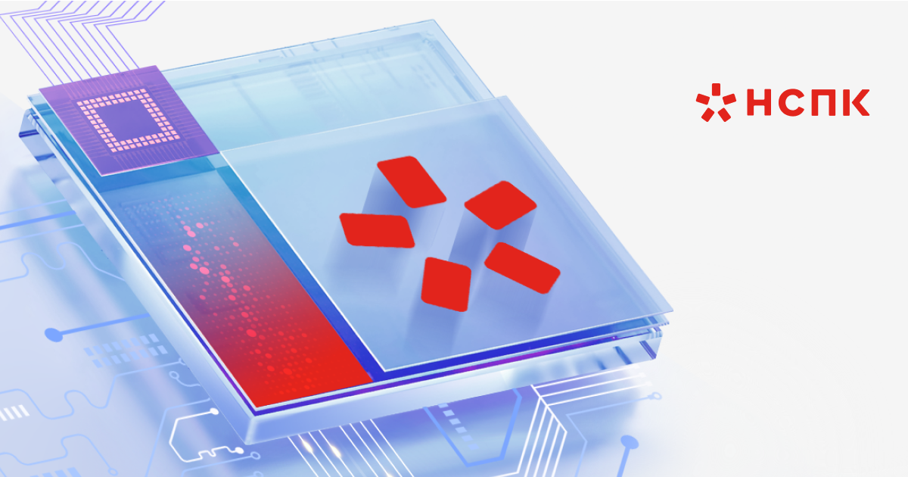

Ключевые проекты
Государственные структуры, банки, промышленность и медицина. Проектирование, внедрение и долгосрочная поддержка критически важной инфраструктуры.

АО «НСПК»
20 лет помогаем государственным и корпоративным заказчикам строить устойчивую ИТ-инфраструктуру — проектировать, внедрять, сопровождать и масштабировать
Государственные структуры, банки, промышленность и медицина. Проектирование, внедрение и долгосрочная поддержка критически важной инфраструктуры.

АО «НСПК»
Полный перечень реализованных проектов с 2014 года.
Ничего не найдено